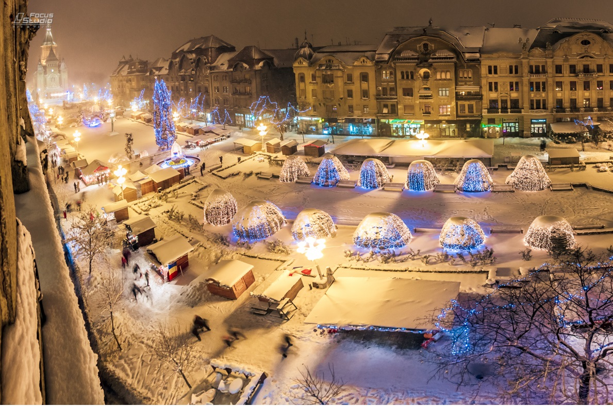
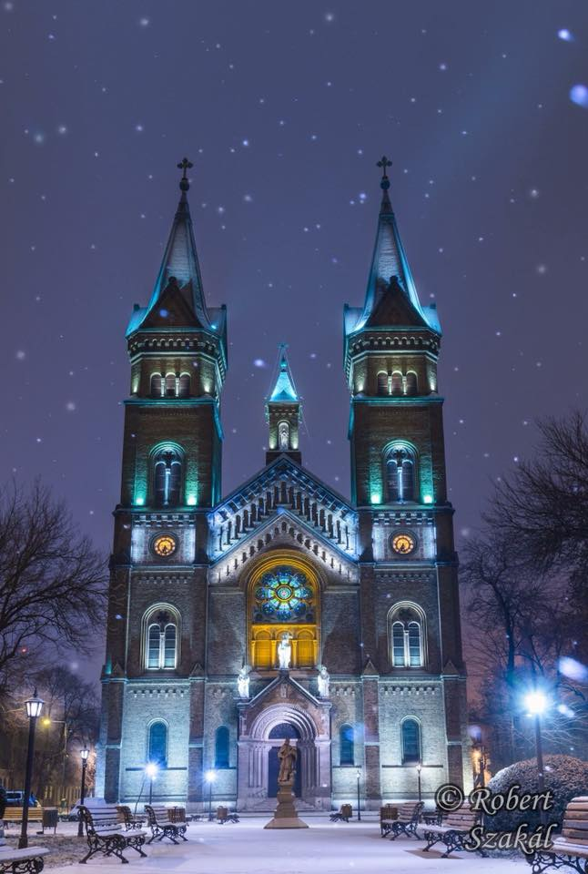
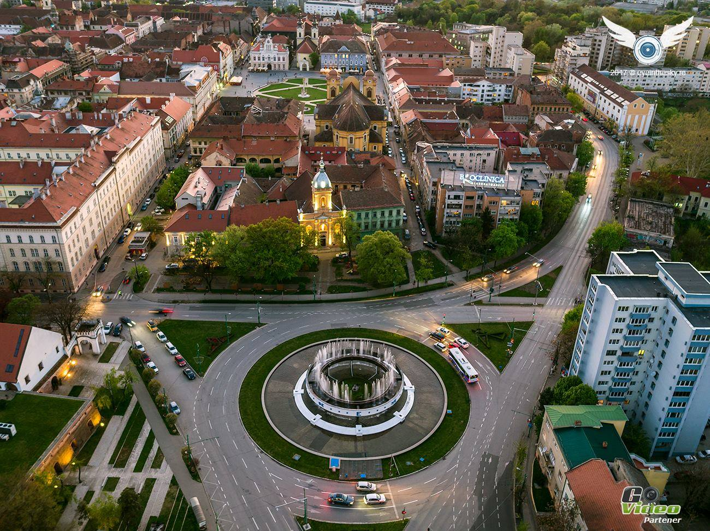

Tururi de oraș: în Timişoara şi Arad, şi, dacă le solicitați cu anticipare, în restul ţării. Nu ezitați să le oferiți invitaților dumneavoastră cele mai performante servicii: pick-up de la aeroport, cazare, check-in la hotel, mese tradiţionale și shopping de suveniruri. Aceste servicii sunt oferite în engleză, spaniolă și română.
Tururi corporate: Invitații dumneavoastră străini vor putea beneficia de tururi de oraş în grup, ceea ce va facilita posibilitatea de networking. Acest tip de serviciu vă va fi de real ajutor dacă ați organizat o conferinţă internaţională, dacă sunteți gazdele unei delegaţii străine, sau pentru a-i face pe angajaţii străini să se simtă ca acasă în Timișoara.
Tururi tematice: Invitații dumneavoastră au timp liber seara? Alegeți din oferta noastră pub crawls şi cunoașterea barurilor alternative, tururile de degustare de vinuri, tururile de oraş cu barca, vizitele la muzee, participarea la festivalurile de muzică, de teatru sau de operă și orice alte evenimente locale.
Flexibilitate: Veți putea alege soluția potrivită în funcție de vârstă, interesele şi necesităţi. Serviciile noastre sunt perfect adaptabile oricărei situații.
B2B: Sunteți reprezentantul unei agenții de turism? Nimic mai simplu: contactați-ne pentru sprijin şi consultanţă turistică out-going şi in-coming. Grupurile de turiști vor fi primite cu profesionalism și seriozitate, iar flexibilitatea și creativitatea noastră vă vor ajuta să dezvoltați pachete turistice în România şi în Timişoara.
Obiective Turistice
Timișoara este municipiul de reședință al județului Timiș, Banat, România. Se află în vestul României, aproape de frontierele cu Ungaria și Serbia, aflându-se pe plan geografic la distanțe aproximativ egale față de București, Viena și Sofia.
Timisoara este considerata a avea cea mai cosmopolita si variata viata de noapte din Romania. De fapt, orașul vechi este căptușit cu cafenele și baruri de noapte târzii, unde se poate bucura de o atmosferă relaxată mediteraneană.
Turiştii care vor trece prin Timişoara vor putea cunoaşte mai bine oraşul, dacă vor face o plimbare cu tramvaiul turistic „Tram Tur”, ce va circula într-un tur de oraş, înconjurând zona centrală, traseul fiind parcurs în aproximativ o oră.
Fabrica de bere Timișoreana este a doua fabrică de bere înființată pe teritoriul actual al României[necesită citare], în cartierul Fabric din Timișoara, în 1718.Prima fabrica de bere a fost la Sibiu in ianuarie 1717.

Piata Unirii
Piața Unirii este cea mai veche piață din Timișoara, amenajată în stil baroc

MillenniumChurch
Biserica Millennium, cu hramul Sfânta Maria, este cea mai mare biserică romano-catolică din Timișoara, situată în Piața Romanilor din cartierul Fabric.

Punctele Cardinale
Fântâna Punctelor Cardinale este una dintre fântânile reprezentative ale orașului Timișoara, fiind amplasată lângă Piața Ion I.C. Brătianu, la intersecția străzii Oituz cu bulevardul Take Ionescu.